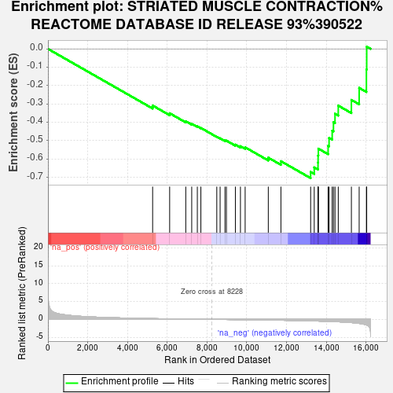
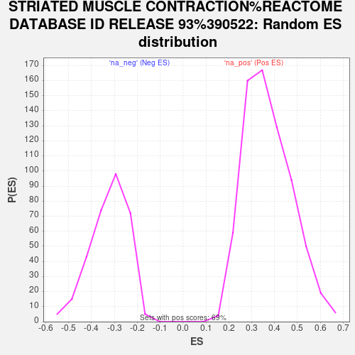

| Dataset | PAL_vs_CTL_ranked |
| Phenotype | NoPhenotypeAvailable |
| Upregulated in class | na_neg |
| GeneSet | STRIATED MUSCLE CONTRACTION%REACTOME DATABASE ID RELEASE 93%390522 |
| Enrichment Score (ES) | -0.7041266 |
| Normalized Enrichment Score (NES) | -2.1894515 |
| Nominal p-value | 0.0 |
| FDR q-value | 0.0013101044 |
| FWER p-Value | 0.013 |

| SYMBOL | RANK IN GENE LIST | RANK METRIC SCORE | RUNNING ES | CORE ENRICHMENT | |
|---|---|---|---|---|---|
| 1 | TPM4 | 5266 | 0.210 | -0.3086 | No |
| 2 | TMOD1 | 6122 | 0.136 | -0.3506 | No |
| 3 | MYH3 | 6933 | 0.081 | -0.3943 | No |
| 4 | DMD | 7232 | 0.060 | -0.4080 | No |
| 5 | MYL2 | 7514 | 0.041 | -0.4221 | No |
| 6 | ACTN2 | 7693 | 0.030 | -0.4307 | No |
| 7 | TMOD3 | 8493 | -0.015 | -0.4789 | No |
| 8 | MYH8 | 8660 | -0.025 | -0.4872 | No |
| 9 | TNNT2 | 8905 | -0.041 | -0.4990 | No |
| 10 | TMOD2 | 8977 | -0.046 | -0.4998 | No |
| 11 | MYL3 | 9428 | -0.075 | -0.5216 | No |
| 12 | MYH6 | 9683 | -0.091 | -0.5301 | No |
| 13 | TTN | 9920 | -0.108 | -0.5362 | No |
| 14 | NEB | 11084 | -0.196 | -0.5925 | No |
| 15 | TPM2 | 11719 | -0.251 | -0.6119 | No |
| 16 | VIM | 13214 | -0.429 | -0.6704 | Yes |
| 17 | TNNC1 | 13395 | -0.456 | -0.6455 | Yes |
| 18 | DES | 13585 | -0.484 | -0.6191 | Yes |
| 19 | TPM1 | 13589 | -0.485 | -0.5811 | Yes |
| 20 | TNNC2 | 13603 | -0.487 | -0.5435 | Yes |
| 21 | TPM3 | 14093 | -0.578 | -0.5282 | Yes |
| 22 | TNNT1 | 14141 | -0.587 | -0.4849 | Yes |
| 23 | TNNI1 | 14298 | -0.620 | -0.4457 | Yes |
| 24 | TNNT3 | 14362 | -0.633 | -0.3997 | Yes |
| 25 | MYL4 | 14440 | -0.649 | -0.3533 | Yes |
| 26 | TNNI2 | 14604 | -0.689 | -0.3091 | Yes |
| 27 | MYL1 | 15264 | -0.913 | -0.2779 | Yes |
| 28 | MYBPC1 | 15655 | -1.136 | -0.2125 | Yes |
| 29 | TCAP | 16019 | -1.559 | -0.1121 | Yes |
| 30 | MYBPC2 | 16034 | -1.587 | 0.0120 | Yes |
